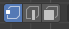
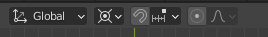
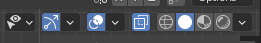

Blender Techniques
Scrape
- Under Layout, create a sphere, with add → Mesh → Ico Sphere. At the left bottom corner, set subdivisions to 4, and adjust radius.
- To flatten a surface, you can use Scrape under Sculpting.
- See the right hand side, adjust the brush, go to Advanced, tick Normal and Plane, untick Accumumlate. Falloff → Set to Sphere.
Collider from duplicate
- Press A to select the mesh, Shift+D right click to duplicate. Make sure your not in edit mode, but object mode.
- Add Modifier → Decimate → Reduce Ratio to 0.05. It allows less computation when dealing with collision. Tick Triangulate. Next to camera icon, use the down arrow to apply.
- Export FBX, Selected Objects only, Apply Transform.
Create n-sided shape
- Under Layout Object Mode, add mesh Circle.
- Click ~ to quickly adjust orthogonal view.
- Under Add Circle option at left bottom, adjust vertices to n. (5 in this case)
- Use Tab to switch to Edit Mode.
- Ctrl+R to subdivide each edge. Scroll up and down to increase and decrease the number of even subdivision.
- Click on these icons, to switch to either Vertex or Edge or Face.
- Shift + left click, to select multiple edges.

- Press X again and select what you want to delete. (Edges)
- Hit E key to expand, hit Y to lock expanding along y axis, press Ctrl and scroll to expand along grid points.
- Switch Face select mode, shift to select faces, press E to expand again. Press 1 to expand 1m.
- To position the object relative to center, not on top of the origin, knock it down half a meter via, press A to select the whole object, then adjust it using Transform.
Duplicate and Rotate Around
- Press the icon looks like a dart board. Set to 3D Cursor, this allows the rotation relative to the center of cursor.
- If you set the 3D cursor not at center accidentially, Shift+C to reset.

- Press A to select all objects.
- Press Shift+D to duplicate.
- Press R to rotate. Type any angle you want.
Select whole object
- You cannot just use select box to select the whole 3d objects.
- You can turn on the toggle X ray, by clicking the icon of two layers.

- Then drag the box to include the whole object.
Apply Rotation
- Under Object Mode, Ctrl+A and Rotation to apply Rotation.
Select Invert
- Select objects that are inverted to your select objects. Go Select → Ctrl+I.
Array Modifier
- Object Mode → Add → Plain Axes. This creates an empty object.
- Go to Transform, Z: 36 degrees.
- Go to Wrench icon, Add Modifier → Array → Uncheck Relative Offset #8594 Check Object Offset → Expand Object Offset → Drag Empty from Collection to Object under Object Offset → Increase Count.
- Apply.
Numberpad for orthogonal angle adjustment
- Front Orthographic - 1, Right Orthographic - 3, Top Orthographic -7.
Import reference images
References